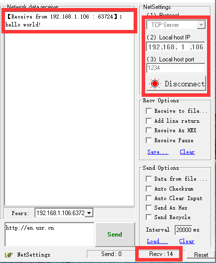
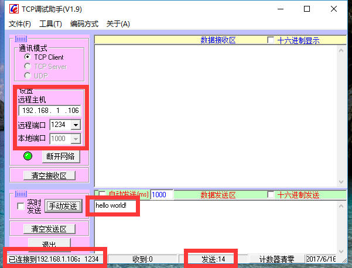
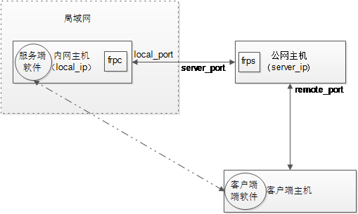
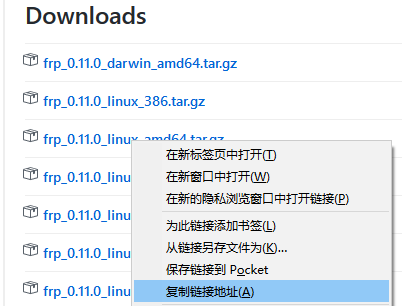
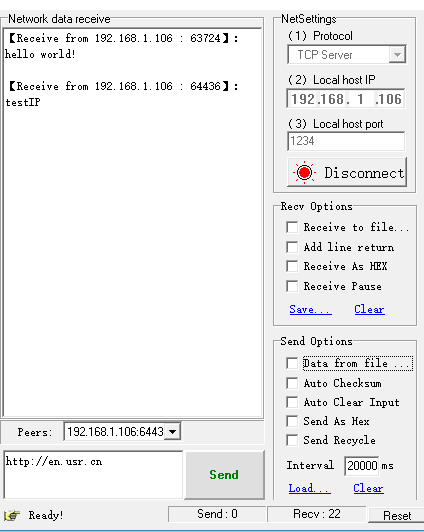
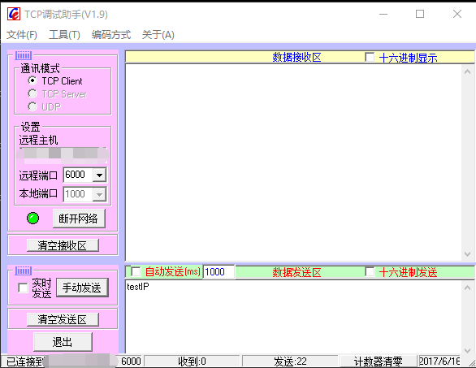

本来想用用ngork的，发现
frp十分简单，于是用腾讯云服务来实验了一把。
实验简介
内网模拟效果：
使用一个TCP调试助手作为服务器端软件，获取本机的内网IP和端口，并开启监听
使用另一个TCP调试助手作为客户端软件，刚刚监听的IP端口，连接并发送数据。
发送测试数据：
hello world!
因为服务器端和客户端在同一局域网内，所以可以正常通信。
现在要进行内网穿透实验，客户端软件向一个公网IP和端口发送数据，数据会被“转发到”我们设定的在内网中的服务器端软件上。
其原理如下图所示：

环境说明
- Frp服务器： Ubuntu LTS 16.04, 64位
- Frp客户端： Windows 10, 64位
frp软件安装
Frp服务器端下载安装
ssh登录云服务器
事先获取安装包下载链接
到下载界面
,将鼠标移动到要下载的链接,右击可以复制链接
下载安装包至云服务器
利用上一步的获取的链接下载frp安装包
wget https://github.com/fatedier/frp/releases/download/v0.11.0/frp_0.11.0_linux_amd64.tar.gz
解压即安装
tar -xzf frp_0.11.0_linux_amd64.tar.gz
Frp客户端下载安装
到下载界面下载并解压，注意保持版本一致
配置与测试
Frp服务器端frps配置
进入解压目录
cd frp_0.11.0_linux_amd64/
查看或修改frps.ini
vi frps.ini
注意是 frps.ini, 不是frpc.ini
文件如下即可，如果不是就改成这样：
执行
./frps -c frps.ini
成功之后会显示：
Start frps success …
客户端frpc配置
进入解压目录
cd frp_0.11.0_linux_amd64/
修改frpc.ini
vi frpc.ini
注意是 frpc.ini, 不是frps.ini
格式如下所示：
这里面有3个量是要根据实际情况来 xxx.xxx.xxx.xxx是云服务的IP地址，zzz.zzz.zzz.zzz是本地服务IP， yyyy是本地服务端口
对于本次实验来说：zzz.zzz.zzz.zzz =192.168.1.106, yyyy=1234
执行
./frpc.exe -c frpc.ini
成功之后会显示：
login to server sucess …
连接与发送测试
TCP服务端软件还是跟之前一样设置，启动。

客户端软件的远程IP为frpc.ini中的server_addr，即xxx.xxx.xxx.xxx，端口为frpc.ini 中的remote_port。

发送测试数据：
testIP
成功通信。